First-floor flat2 bedrooms
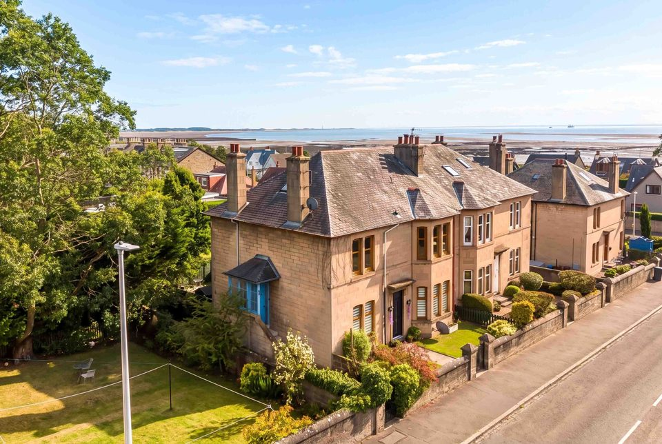
£175,000Offers over
14 Bridge Street, Broughty Ferry
Listed 21 September 2026 · Verdala
Daily property watch
Homes for sale · 2–3 bedrooms · Up to £270,000
Updated 7 October 2026 · 4 new · 80 in the archive

Listed 21 September 2026 · Verdala
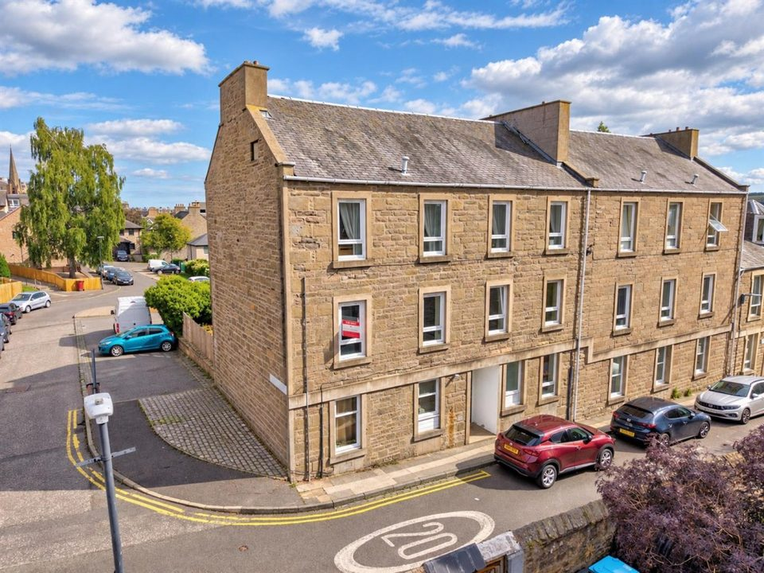
Listed 21 September 2026 · Rosie Fraser Real Estate
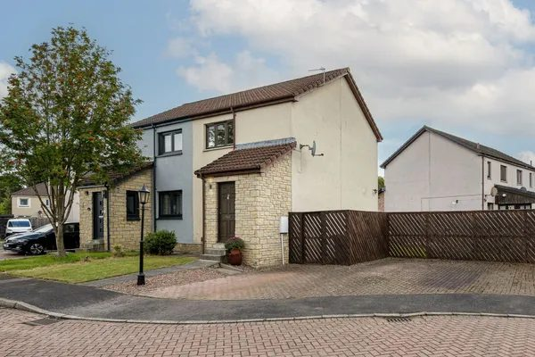
Listed 21 September 2026 · Axis Property
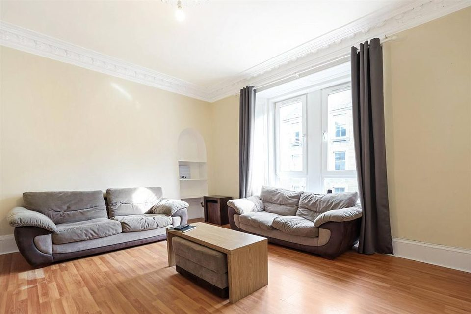
Listed 21 September 2026 · Slater Hogg & Howison
Original agent page unavailable; portal listing linked.
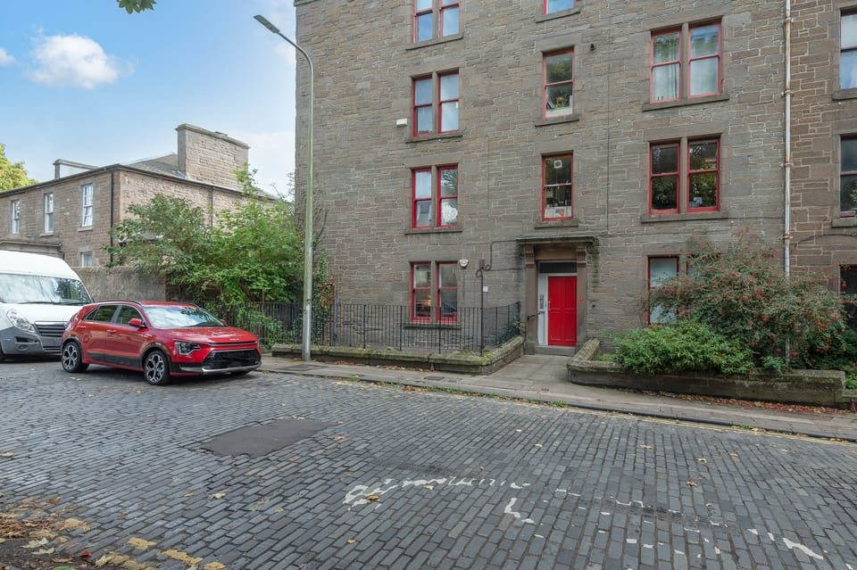
First seen 21 September 2026; listing date unavailable · Thorntons
Original listing date unavailable; newly discovered through TSPC’s recent-properties index.
First seen 21 September 2026; listing date unavailable · Ross Strachan & Company
Original listing date unavailable; newly discovered through TSPC’s recent-properties index.
Original agent page unavailable; portal listing linked.
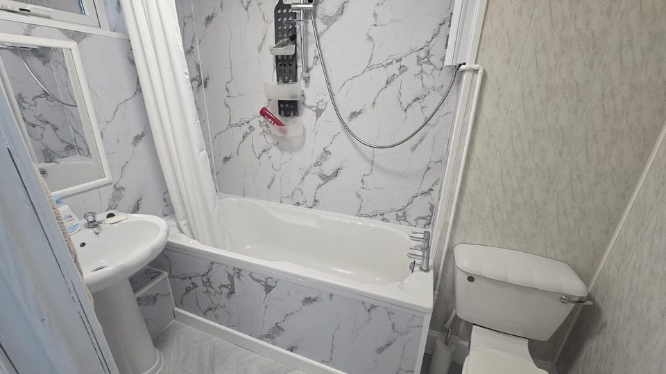
First seen 21 September 2026; listing date unavailable · Campbell Boath
Original listing date unavailable; newly discovered through TSPC’s recent-properties index.
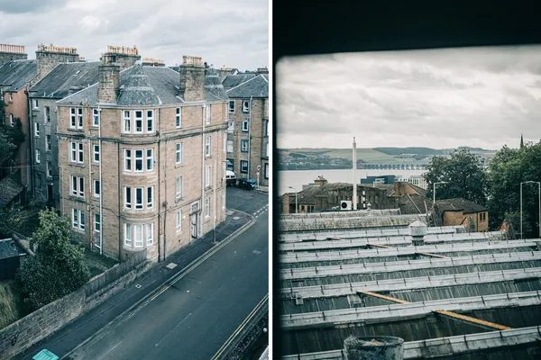
Listed 19 September 2026 · Axis Property
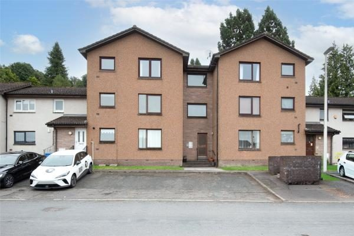
First seen 20 September 2026; listing date unavailable · Lindsays
First observed on 19 September 2026 in the previous source-check notes; verification completed on 20 September. Original listing date unavailable.
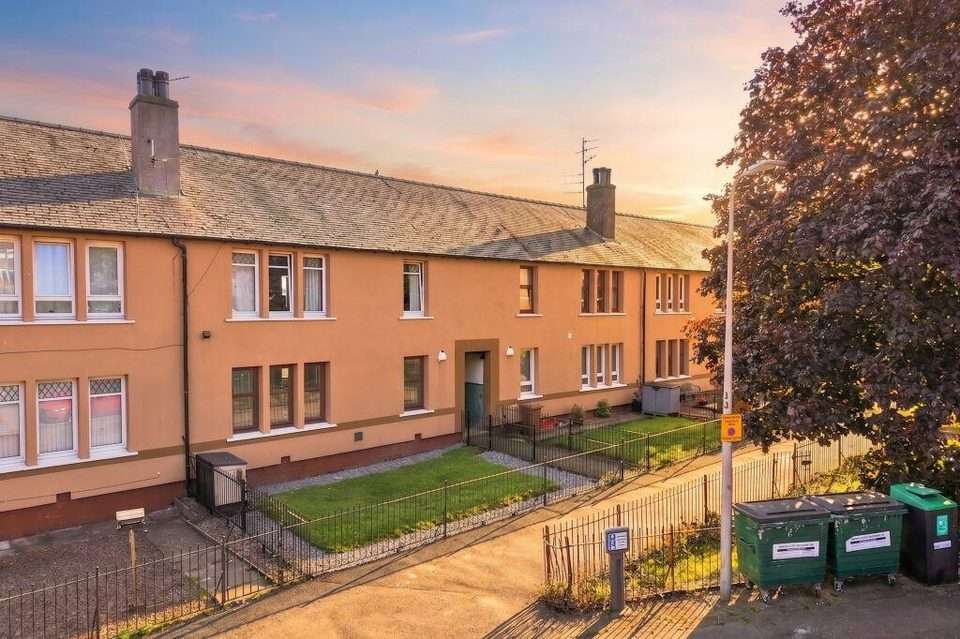
Listed 18 September 2026 · Gilson Gray
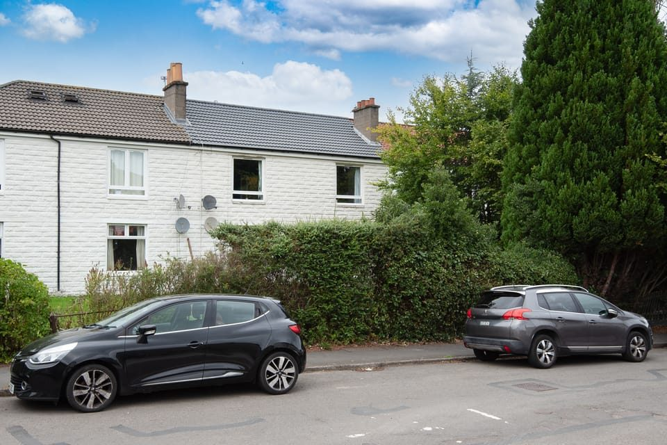
First seen 19 September 2026; listing date unavailable · Thorntons Property
First discovered 19 September 2026 during recovery of a source without a successful baseline. Original listing date unavailable; not confirmed as newly listed today.
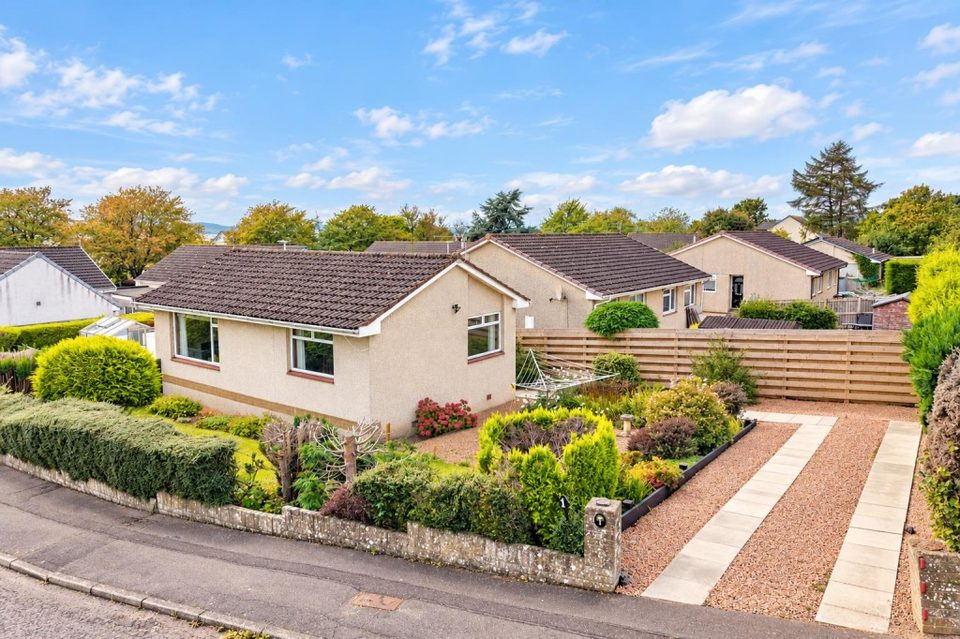
Listed 17 September 2026 · Rosie Fraser Real Estate
Scope for modernisation.
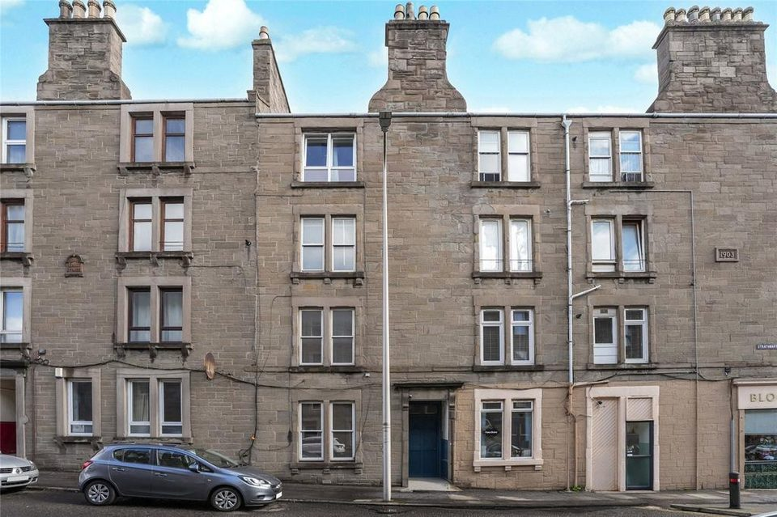
Listed 17 September 2026 · Slater Hogg & Howison
Original agent page unavailable; portal listing linked.
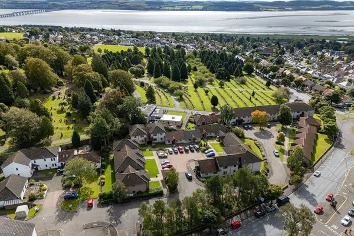
First seen 18 September 2026; listing date unavailable · Axis Property
Retirement development for residents aged 55 and over. Factor approximately £100 per month. Original listing date not retained in saved evidence.
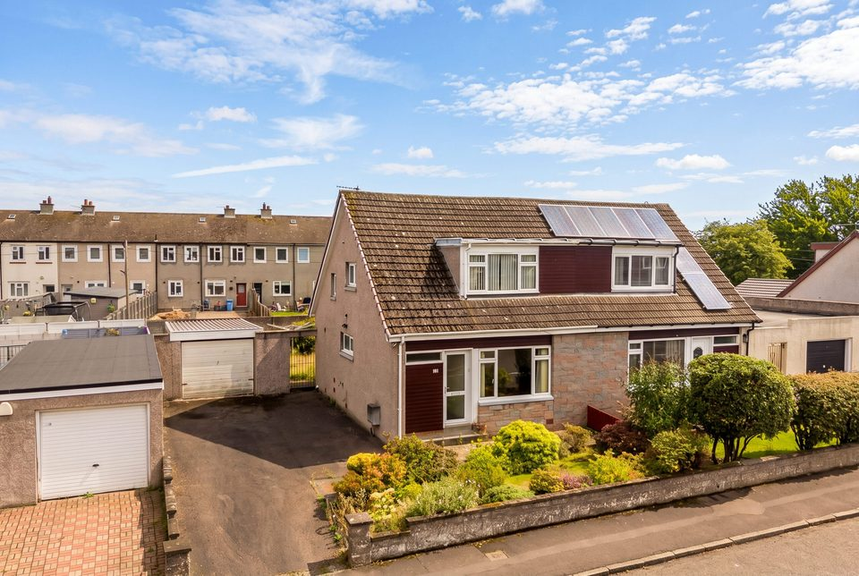
Listed 16 September 2026 · Verdala
Advertised as a Betts Almond-style villa. Some areas would benefit from modernisation; the ground-floor dining room is currently used as the third bedroom.
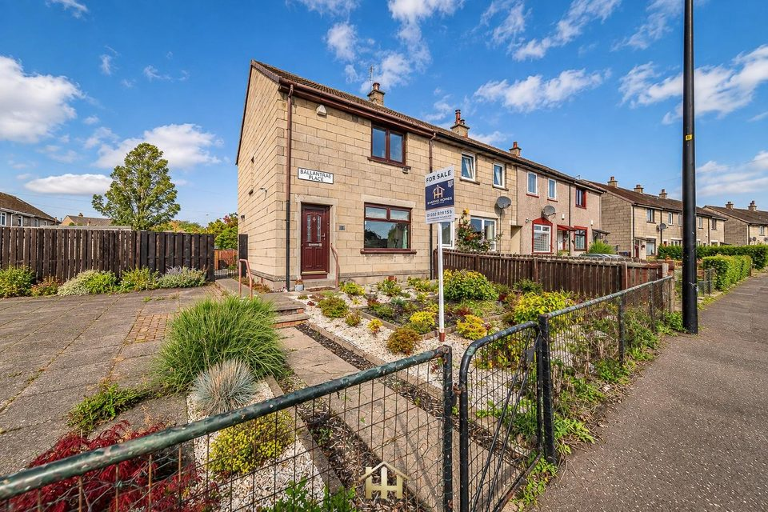
Listed 16 September 2026 · Harmony Homes
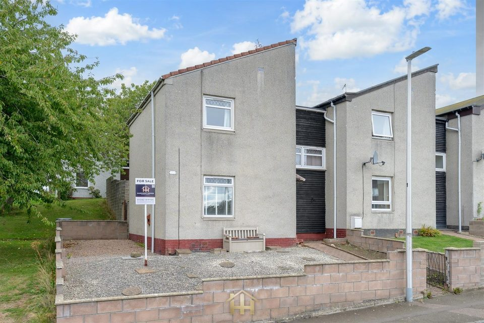
Listed 16 September 2026 · Harmony Homes
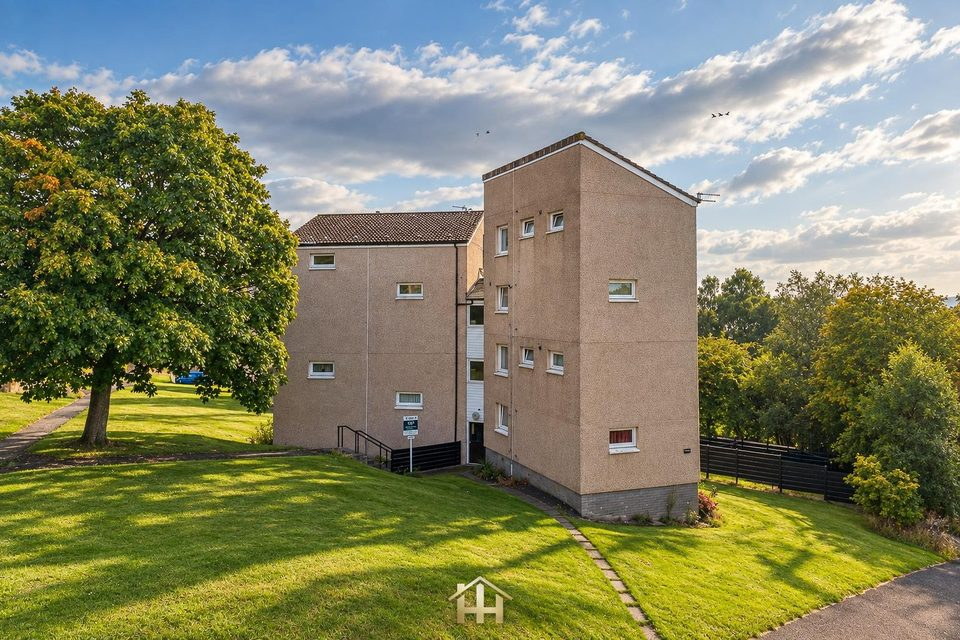
Listed 16 September 2026 · Harmony Homes
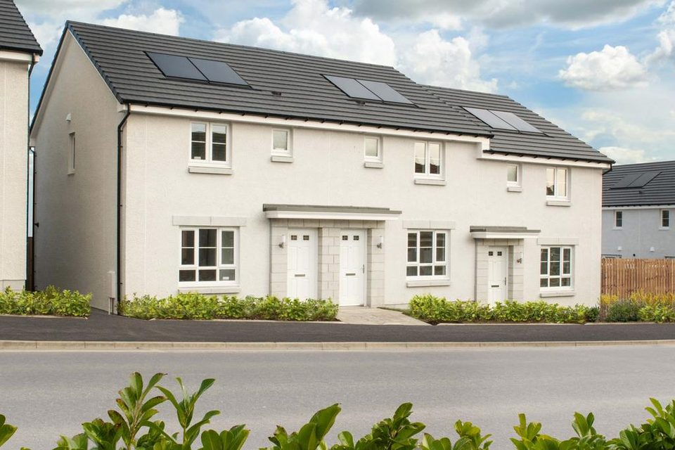
First seen 16 September 2026; listing date unavailable · Barratt Homes
First discovered 16 September 2026; older listing advertised for over 14 days. Original listing date unavailable.
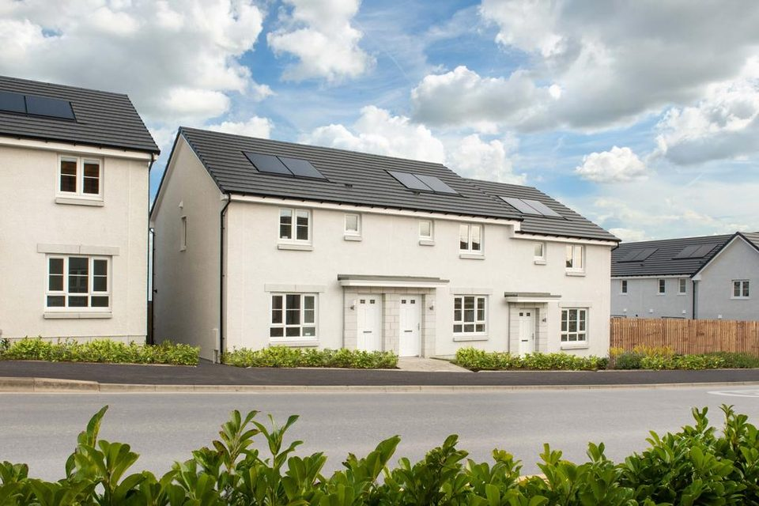
First seen 16 September 2026; listing date unavailable · Barratt Homes
First discovered 16 September 2026; older listing advertised for over 14 days. Original listing date unavailable.